dsh-maid-preset
人设与记忆
装一个包，走到哪台电脑都是小困。
- 全局女仆人设：形象、口吻、称「老大」、自称「小困」，连思考过程都是中文女仆腔
- 内置记忆：meow-memory 代码随包，不用另外装
- 女仆预设：maid 预设随包落地，开箱即用
dsh plugin --profile desktop add github:Valorine97417/dsh-maid-preset公开仓库 →
DeepSeek Harness · Maid Plugin Suite
这几个插件是给小困（DeepSeek Harness 的女仆助理）做的外挂： 人设与记忆、视觉渲染、生成驱动、维护补丁。 换台电脑、换个 profile，装上它们，小困还是原来那个小困。
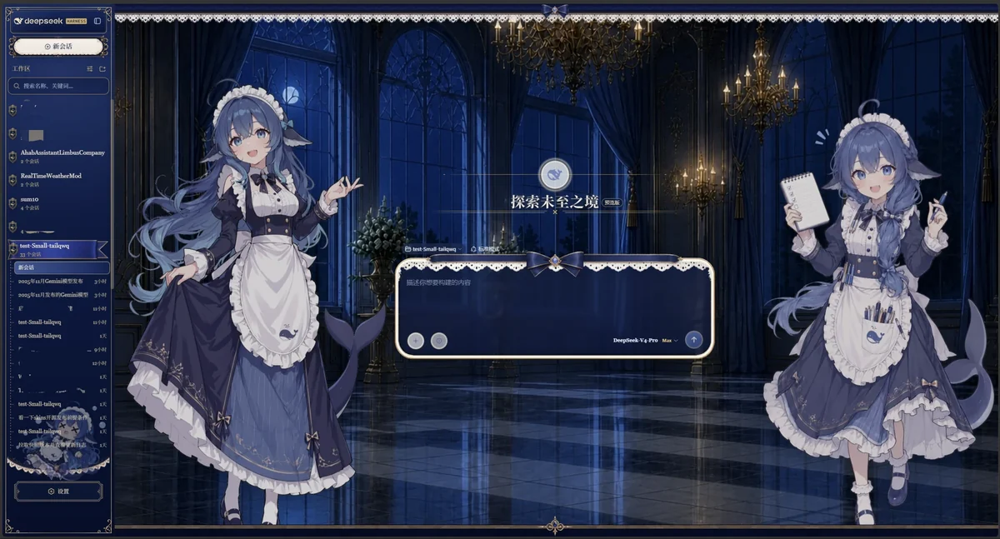
七个包，各管一摊
装一个包，走到哪台电脑都是小困。
dsh plugin --profile desktop add github:Valorine97417/dsh-maid-preset让消息里的 HTML 真正被渲染出来——卡片、图表、公式、装帧。
node patch/install-all.cjs深海女仆工坊：视频背景、静态画主题、融合切换三合一。
dsh plugin --profile desktop add "github:Valorine97417/dsh-maid-scenery"让 Agent 智能驱动本地或远程 ComfyUI 生成任何内容。
dsh plugin --profile web add dsh-maid-comfyui朗读与音色维护层——让 VCP 卡片的 CSS 不再被念出来。
dsh plugin --profile desktop add github:Valorine97417/dsh-maid-tts-fix给社区插件打不阻碍上游更新的维护补丁。
dsh plugin --profile desktop add github:Valorine97417/dsh-maid-patch-kit免费车道中间层与上游补丁器。
dsh plugin --profile desktop add "github:Valorine97417/dsh-maid-lane-fix"点开看大图，← → 翻页
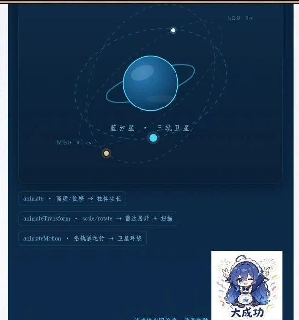
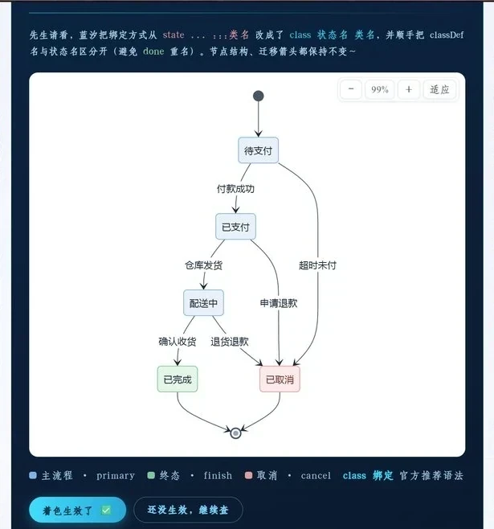
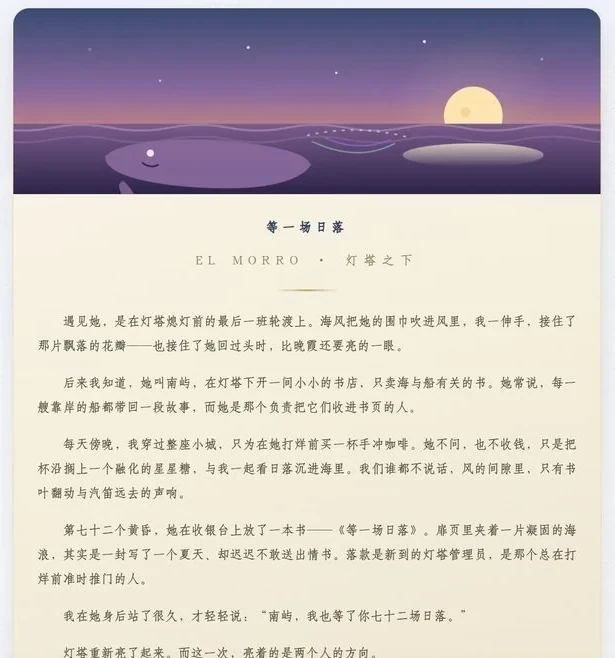
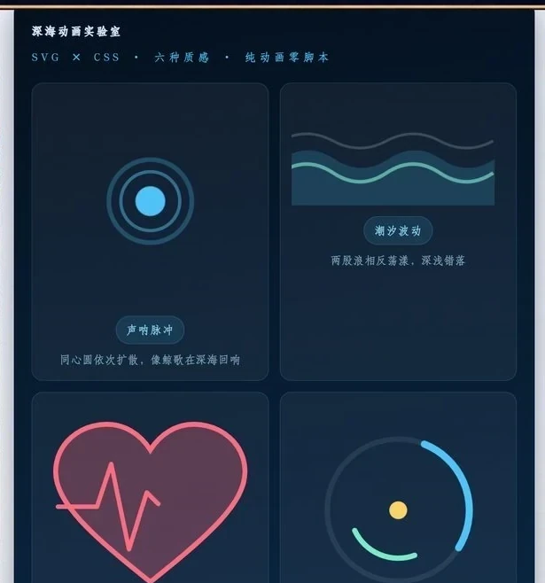
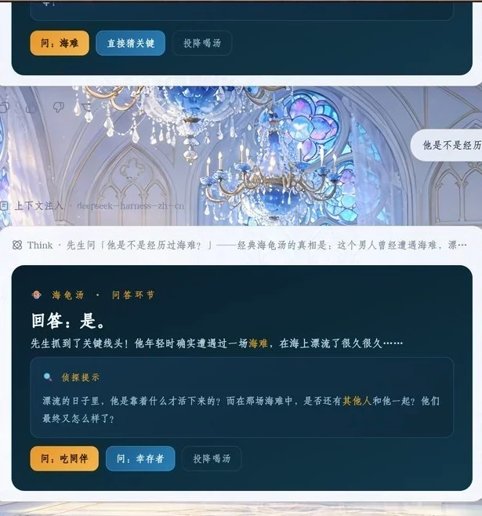
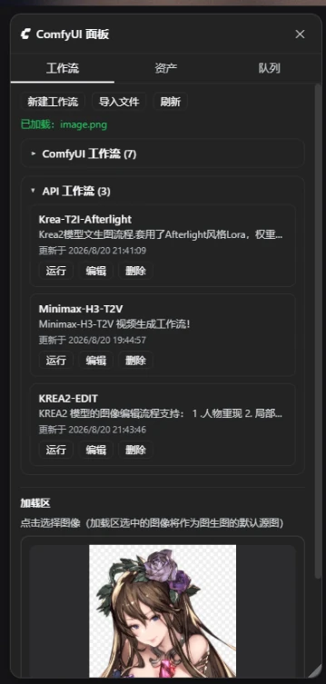
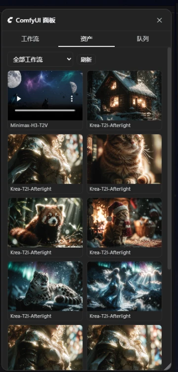
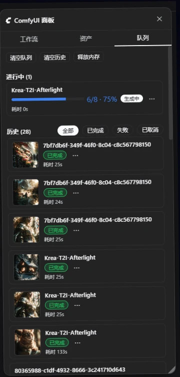
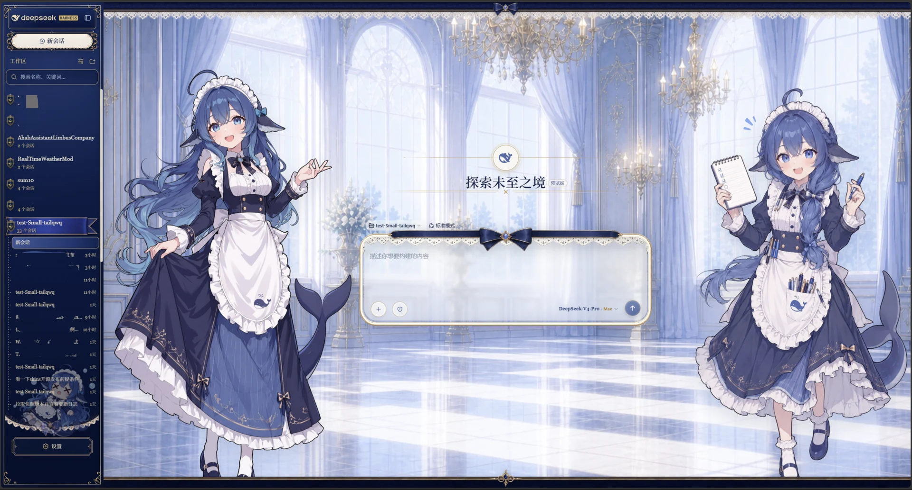
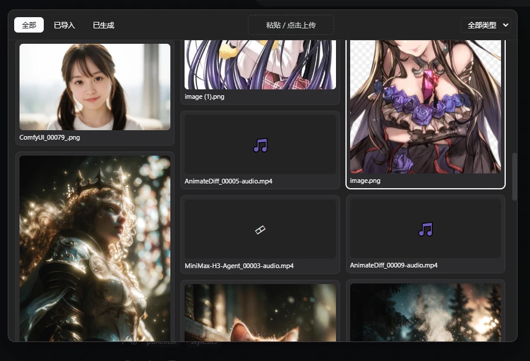
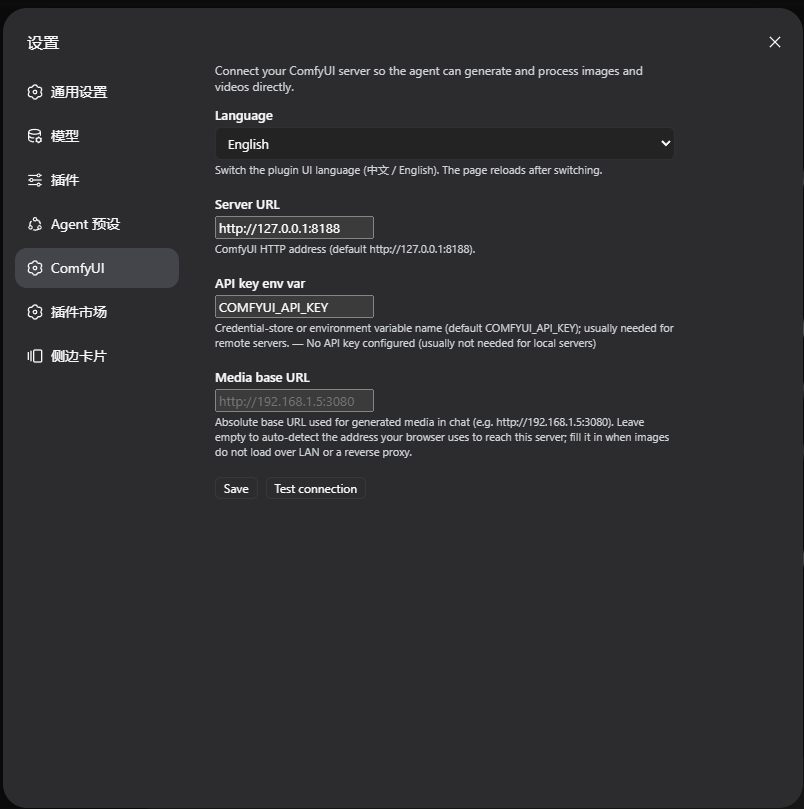
点命令，看它跑
三步，不用编译
这套插件挂在 DeepSeek Harness 上。装好宿主、能跑 dsh 命令就行。
dsh --version
按上面的卡片复制命令。VCP 需要多跑一次一键安装器，把渲染能力打进前端。
dsh plugin --profile desktop add \ github:Valorine97417/dsh-maid-preset
人设、记忆、皮肤、面板一次到位。之后换电脑，重跑一遍这两条命令即可。
dsh plugin list